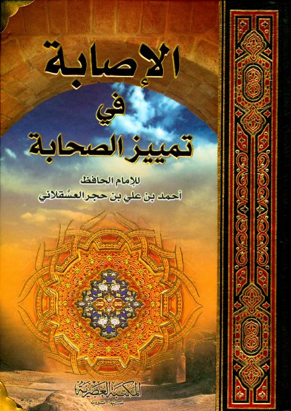

Downloads need an internet connection.
الإصابة في تمييز الصحابة ط. العصرية
Authors: أحمد بن علي بن حجر العسقلاني
Publishers: المكتبة العصرية
**▫️ العنوان: الإصابة في تمييز الصحابة ط. العصرية** ▪️ المؤلف: #أحمد_بن_علي_بن_حجر_العسقلاني ▫️ الناشر: #المكتبة_العصرية ▪️ تاريخ النشر: 1433هـ 2012م ▫️ بلد النشر: صيدا، #لبنان • بيروت ▪️ الطبعة: 1 ▫️ الصفحات: 2047 ▪️ نوع الوعاء: #كتاب ▫️ التصنيف الرئيسي: #التراجم_والأعلام ۪